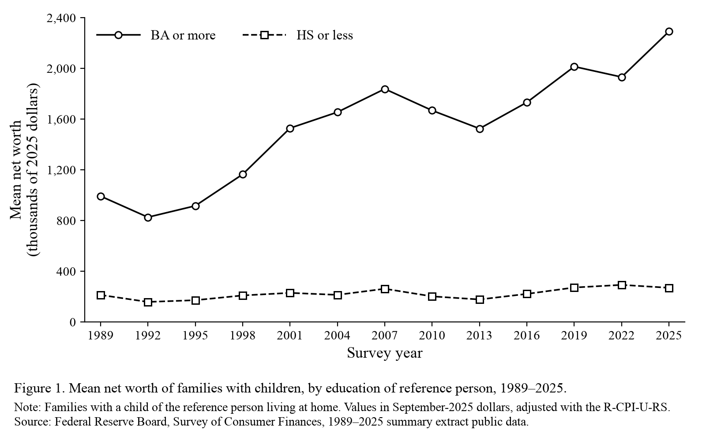
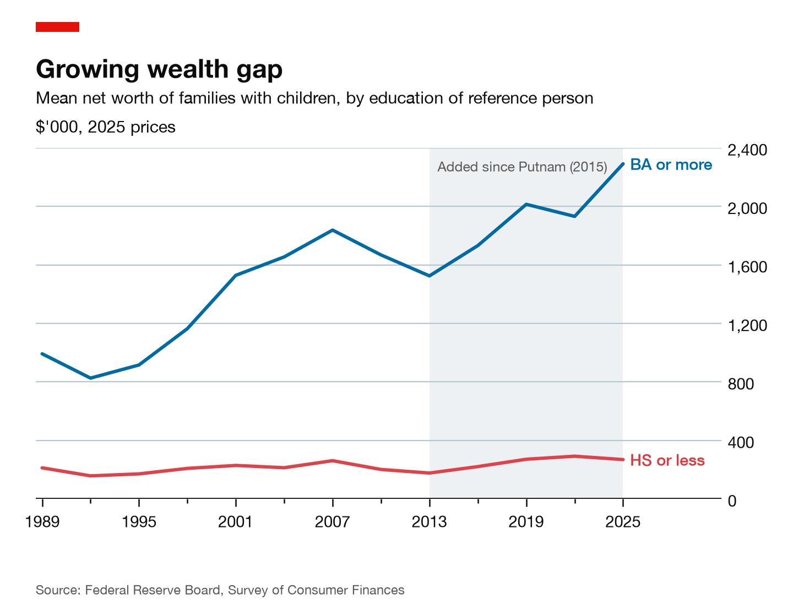
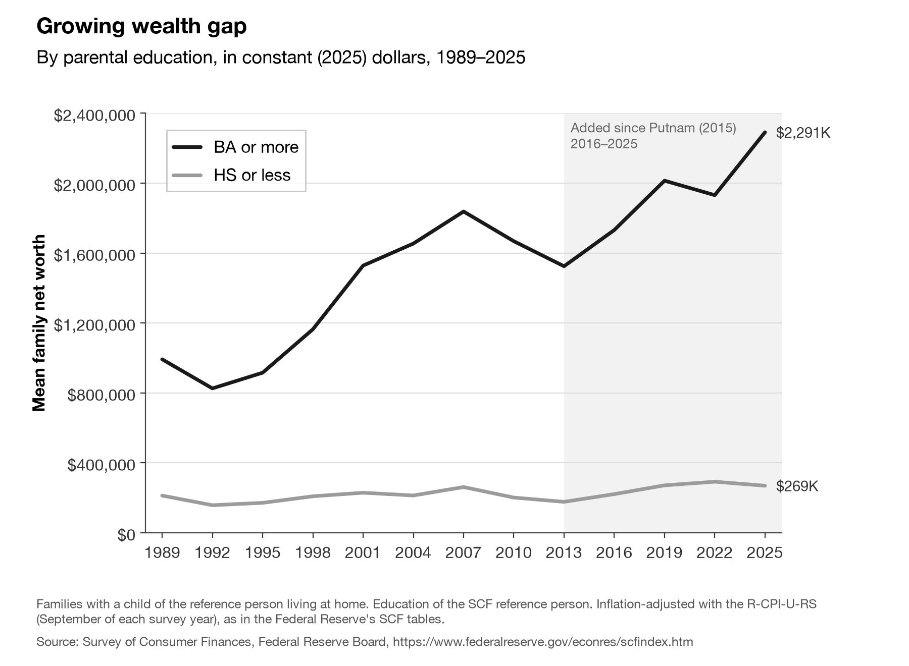
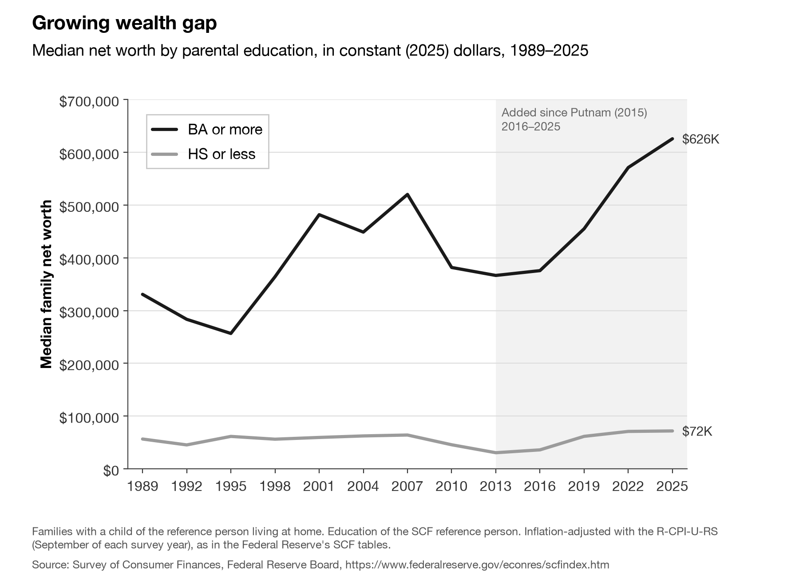
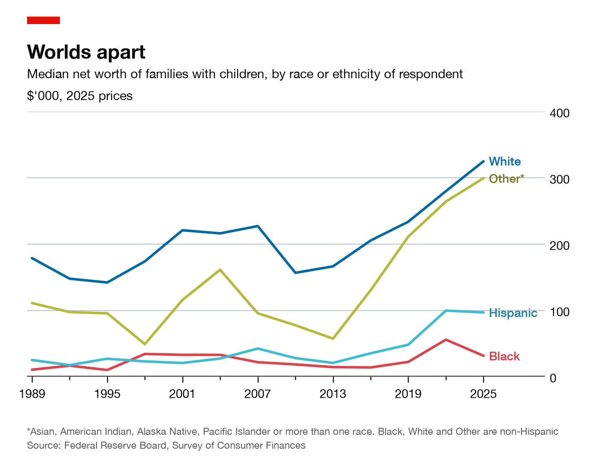

Week 4 · Section 3 · Workshop guide
From an empty folder to a figure
Start with an empty folder and a research question. Finish with real data and a first figure, by talking it through with your agent. You've used an agent before, so each step gives you a goal, what to put in your message and why, and what to expect back. Write your own messages; examples are there if you get stuck.
Wording below switches to match your tool.
Adapted from Paul Goldsmith-Pinkham's post "From an Empty Folder to a Figure".
Today's worked example
Question: how has the wealth gap between families with college-educated parents and families whose parents have a high-school education or less changed in the US since 1989, and where does it stand in the latest survey?
A likely source: the Federal Reserve's Survey of Consumer Finances (SCF), run every three years. You don't need to know which files: that's the agent's job.
It's a good first question because it hides real choices: which files, which year's dollars, who counts as a "parent" family, mean or median. Our teaching team ran this conversation with an agent before class; the lab follows the same turns.
1 · Six conversation moves
- Describe the question, not the steps. Include what you know, and what you don't.
- Ask for scripts, not just a result. One to download, one to plot.
- Ask it to report before it builds. Source, years, and the choices it made.
- Name a style instead of listing settings. See Pick a style.
- Work in small rounds. One or two changes per message, then look again.
- Ask how it knows. When a number matters, ask what it was checked against.
You keep the judgment: which definition, mean or median, how sure you are, and what the figure says. Data come from a real source, by a script, never typed from memory.
2 · Check your data
A clean-looking figure can rest on wrong numbers. Pick two or three checks, and say in your README which ones you did.
| Check | Ask for it |
|---|---|
| The source's own tables | Does your code reproduce a table the source publishes itself? What's the largest difference? |
| Spot-check by hand | Three numbers, and exactly where to find them in the source. Then find them yourself. |
| How sure is it? | A 95% confidence interval, the way the survey recommends. |
| Rerun from scratch | Delete the outputs, rerun both scripts. Did anything change? |
| Another source | Does a second source agree? If not, why not? |
| A second opinion | In a fresh sessionchat: what could make these numbers wrong? |
3 · Pick a style
Naming a style is the fastest way to a good figure: one reference brings a whole set of habits, so you don't have to list fonts, colors and gridlines. For this course, use one of two. Here is the same data in each:


Not sure? Use the journal figure. You can remake the same figure in the other style later with one message: the data and checks stay the same. "In the style of" is for learning: no logos, and don't present your figure as someone else's.
The lab: wealth by parents' education
Each step tells you what to aim for, what to put in your message and why, and what you should get back. Write your own messages; an example is tucked under each step if you're stuck. Work at your own pace. Then use the same steps for the assignment: reproduce a figure from one of our sessions, or finish this one.
-
0Set upAn empty folder, nothing else
- In GitHub Desktop: File → New repository…. Name it
ps158-reproduceand create it. - Open that folder in the Claude app's Code tab (Local → Select folder)Codex (open the folder and choose Local).
No template, no starter code. Everything in this folder will come out of your conversation.
- In GitHub Desktop: File → New repository…. Name it
-
1Get the dataMoves 1–3: describe, ask for scripts, report first
Goal: the agent finds the data, downloads it with a script, and tells you what it found before building anything else.
Put in your message
- The question, in plain words: the wealth gap by parents' education, since 1989, up to the latest survey. Say what you want to learn, not how to get it.
- What you know, and don't: the likely source is the Fed's Survey of Consumer Finances, but you don't know which files. That gives it a head start and tells it to search and verify, not guess.
- Two scripts: one to download (e.g.
get_data.py), one to plot (e.g.plot.py). Scripts can be rerun, checked and handed in. - Report first: ask it to tell you what it found before making anything else.
What you should get: a short report naming the source, the files and the years it found, plus a download script and the raw data in your folder.It may ask to install Python packages or set up a virtual environment. That's normal: read the request, and approve it if it makes sense.Example message, if you're stuck
I want to see how the wealth gap between families with college-educated parents and families whose parents have a high-school education or less has changed in the US since 1989. I think the Federal Reserve's Survey of Consumer Finances has this, but I don't know which files to use. Find the data and extend it to the latest survey. Write get_data.py to download it, and plot.py to draw a first figure. Tell me what you found before making anything else.
-
2Read the reportBefore you trust any number
Goal: you understand the choices behind the numbers. Can you answer these from its reply? If not, ask before going on.
- Source: which survey files, and do they go up to the latest survey?
- Dollars: which year's dollars are the numbers in, and how was inflation handled?
- Families: all families, or only families with children? Whose education counts?
- Weights: how does the code use the survey's weights?
Two of these are judgment calls, not facts: which families, and later, mean or median. Ask the agent to show you the options, then choose one yourself.What our dry run found (open after you've read yours)
The SCF's public files are already in the latest survey's dollars, so don't adjust them twice.
Which families matters. With families with a child at home, the gap in 2025 is about as wide as in 2013. With all families, it looks smaller. Neither is wrong: pick one, and say which in your README.
-
3Look at the first figure, then ask how to read itRead its answer critically
Goal: a first figure you've looked at yourself, and a reading of it you agree with.
Do this
- Open the figure yourself. Does it answer the question? What looks odd? Pick one point and find its value in your data.
- Name a style if you want a cleaner look (see Pick a style).
- Ask how to read it: the main takeaways with numbers, and the caveats you should say out loud.
- Read its answer critically: is each number in your data? Does it claim anything the figure can't show, like a cause? Tell it what to correct. A figure shows a gap; it doesn't show why.
Example messages, if you're stuck
Where is the figure? Show it to me, and tell me which families and which year's dollars it uses.
How should I explain this figure? Give me the main takeaways with numbers, and the caveats I should say out loud.

From our dry run. Yours will look different; the numbers shouldn't. -
4Check itMove 6: ask how it knows
Goal: at least two checks on your numbers, and a clear sense of how sure you can be.
Put in your message
- A specific number: the headline value from your figure, e.g. the latest point on the top line. A specific number gets a specific answer.
- What to check against: the source's own published tables, a margin of error (95% confidence interval), and at least one other source.
- Where they disagree, and why: a difference you can explain is useful; one you can't is a warning.
What you should get: whether the code matches the source's tables, a range for your number, and how another source compares. Also do one check yourself: find three numbers in the source with your own eyes. More ideas in Check your data.Example message, if you're stuck
In the latest survey, the average college-educated parent family has about $[your number] in net worth. Is this validated? Check it against the source's own published tables, give me a margin of error, and compare with at least one other source. Tell me where they agree, where they don't, and why.
-
5One small change: the medianMove 5: small rounds
Goal: the same figure with median wealth, and a decision about which one you'd report.
- Ask for one change only: the median instead of the mean. Then look again before asking for anything else.
- Ask what changes and why. The mean is pulled up by a few very wealthy families; the median describes a typical one.
- Decide which you'd put in your paper, and write down why.
Example message, if you're stuck
Now make the same figure with median wealth instead of the mean. What changes, and why?

From our dry run. -
6README and commitA repository someone else can rerun
Goal: a repository someone else could rerun and understand.
- Have the agent write a short README: which figure, where the data come from, and anything else worth noting. Read it before you commit.
- Commit and push in GitHub Desktop.
Example message, if you're stuck
Write a short README.md for this project: which figure we made, where the data come from, and how to rerun the scripts.
The assignment: reproduce a figure
Pick one figure and reproduce it with your agent, using the same steps as in the lab. Two options:
- Option A: any figure from a POLISCI 158 session, politics or tech track (slides and handouts are on the course website). Its data must be public: the figure's source line tells you where the numbers come from.
- Option B: today's demo figure, wealth by parents' education, following the lab.
Submit one link to a repository, ps158-reproduce, with get_data.py, plot.py, your reproduced figure, and a short README.md saying which figure and where the data come from (your agent can write it). What exactly to submit.
Bonus (optional): extend it
Once your reproduction matches, take it one step further: bring it up to date, break it down by a group or country, change the measure, or restyle it. Add one more figure and 2–3 sentences on what changed.

Takeaways
Five lessons from Paul Goldsmith-Pinkham's post, in our words:
- Let the agent get the data. Describe what you need; it may stumble at first, but it recovers quickly.
- Reference a style you like. A style guide or a journal's style beats listing plot settings.
- Iterate in small steps. A first draft, then small adjustments.
- Ask for scripts, not just outputs. The script is what makes the work reproducible.
- The judgment is still yours. The question, the definitions, whether the numbers are right, and what the figure says.
Hints
Stuck? First tell the agent what you see, and ask what your options are. Then check here.
Which dollars are these?
Which families should I include?
Why does each family appear five times?
The download is blocked
The agent typed the numbers itself
The conversation is going in circles
No match. Ask your agent, a neighbour, or your TA.